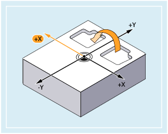
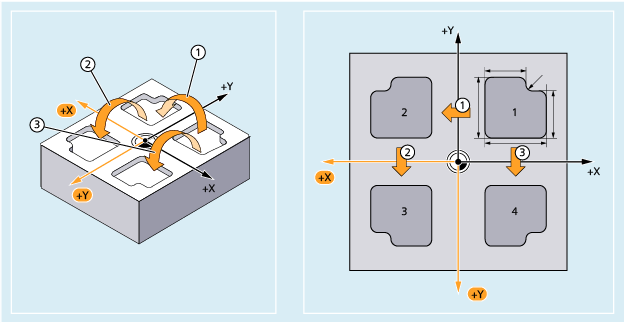
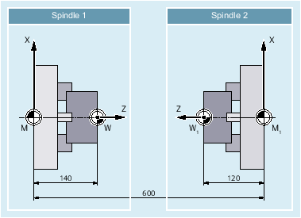

Commands MIRROR and AMIRROR can be used to mirror workpiece shapes on coordinate axes. All traversing movements programmed after the mirror call (e.g. in the subprogram) are executed with mirroring.
Mirroring is programmed using an axial change of direction in the selected machining plane.
Machining plane | Axis to be mirrored | Axial direction change | Syntax 1) |
|---|---|---|---|
G17 | X | Y |
|
Y | X |
| |
G18 | Z | X |
|
X | Z |
| |
G19 | Y | Z |
|
Z | Y |
|
| Absolute mirroring | |
Reference system: | Workpiece coordinate system (SZS) currently set with G54 ... G57, G505 ... G599 | |
Alone in the block: | Yes | |
| Additive mirroring | |
Reference system: | Currently set workpiece coordinate system or workpiece coordinate system last programmed using a frame instruction | |
Alone in the block: | Yes | |
| Geometry axis whose direction should be changed for mirroring. As example, the following definitions should apply:
Programmed axis values are not evaluated in the default setting. Instead, a toggle function is active. The axis value can be freely selected, e.g. "0":
MIRROR without specifying an axis deactivates mirroring for all axes. All frame components of the previously programmed frame are reset. | |
| Notice |
Absolute frame instructions delete all programmed framesIf a programmable frame builds on existing frames, then the additive frame instruction should be programmed instead of the absolute frame instruction. |
The contour shown here (No. 1 in the diagram) is programmed once as a subprogram. The three other contours are generated using mirroring. The workpiece zero is located at the center of the contours.
① | First mirroring to machine the 2nd contour Absolute mirroring of the Y axis using a direction change of the X axis |
② | Second additive mirroring to machine the 3rd contour Additive mirroring of the X axis using a direction change of the Y axis |
③ | Third mirroring to machine the 4th contour Absolute mirroring of the X axis using a direction change of the Y axis |
| Program code | Comment |
|---|---|
| ... | |
| N30 G17 G54 | ; Machining plane X/Y, workpiece zero |
| N40 L10 | ; Machine first contour at top right |
| N50 MIRROR X0 | ; Mirror the Y axis (direction of change of the X axis) |
| N60 L10 | ; Machine second contour at top left |
| N70 AMIRROR Y0 | ; Mirror the X axis (direction of change of the Y axis) |
| N80 L10 | ; Machine third contour at bottom left |
| N90 MIRROR Y0 | ; MIRROR resets previous frames. Mirror the X axis (direction of change of the Y axis) |
| N100 L10 | ; Machine fourth contour at bottom right |
| N110 MIRROR | ;Deactivate mirroring |
| N120 G0 X300 Y100 | ; Retraction |
| N130 M30 | ; End of program |
The actual machining is stored as a subprogram and execution at the respective spindle is implemented by means of mirroring and offsets.
|  |
| Program code | Comment |
|---|---|
| ... | |
| N30 TRANS X0 Z140 | ; Work offset to W |
| ... | ; Machining of the first side with spindle 1 |
| N100 TRANS X0 Z600 | ; Work offset to spindle 2 |
| N110 AMIRROR Z0 | ; Mirroring of the Z axis |
| N120 ATRANS Z120 | ; Work offset to W1 |
| ... | ; Machining of the second side with spindle 2 |
See also:
Programmable mirroring (MIRROR, AMIRROR): Further information
Programmable frames (overview)